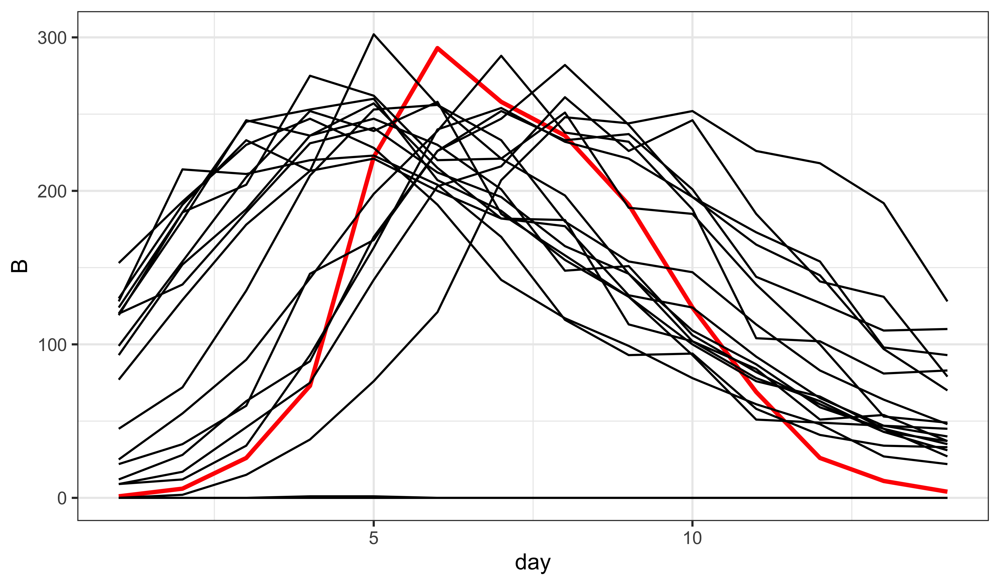

Partially worked solution to the “Rethinking the boarding school flu” exercise
R codes for this document
Basic Exercise: Rethinking the boarding-school flu data
In the preceding, we’ve been assuming that \(B_t\) represents the number of boys sent to bed on day \(t\). Actually, this isn’t correct at all. As described in the report (Anonymous 1978), \(B_t\) represents the total number of boys in bed on day \(t\). Since boys were potentially confined for more than one day, the data count each infection multiple times. On the other hand, we have information about the total number of boys at risk and the total number who were infected. In fact, we know that \(N=763\) boys were at risk and 512 boys in total spent between 3 and 7 days away from class (either in bed or convalescent). Moreover, we have data on the number of boys, \(C_t\), convalescent at day \(t\). Since \(1540~\text{boy-da}/512~\text{boy} \approx 3~\text{da}\), we know that the average duration spent in bed was 3 da and, since \(\sum_t\!C_t=924\), we can infer that the average time spent convalescing was \(924~\text{boy-da}/512~\text{boy} \approx 1.8~\text{da}\). Finally, we are told that the index case was a boy who arrived back at school from holiday six days before the next case.
Formulate a model with a latent class and both confinement and convalescent stages. Implement it in pomp using a compartmental model like that diagrammed below. You will have to give some thought to just how to model the relationship between the data (\(B\) and \(C\)) and the state variables.
library(tidyverse)
library(pomp)
bsflu |>
select(day,B) |>
pomp(times="day",t0=-6,
rprocess=euler(Csnippet("
double N = 763;
double t1 = rbinom(S,1-exp(-Beta*I/N*dt));
double t2 = rbinom(E,1-exp(-Mu_E*dt));
double t3 = rbinom(I,1-exp(-Mu_I*dt));
double t4 = rbinom(R1,1-exp(-Mu_R1*dt));
double t5 = rbinom(R2,1-exp(-Mu_R2*dt));
S -= t1;
E += t1 - t2;
I += t2 - t3;
R1 += t3 - t4;
R2 += t4 - t5;"),
delta.t=1/5),
rinit=Csnippet("
S = 762;
E = 0;
I = 1;
R1 = 0;
R2 = 0;"),
dmeasure=Csnippet("
lik = dpois(B,Rho*R1+1e-6,give_log);"),
rmeasure=Csnippet("
B = rpois(Rho*R1+1e-6);"),
statenames=c("S","E","I","R1","R2"),
paramnames=c("Beta","Mu_E","Mu_I","Mu_R1","Mu_R2","Rho")
) -> fluHow many parameters can reasonably be fixed? How many must be estimated? Obtain some ballpark estimates of the parameters and simulate to see if you can plausibly explain the data as a realization of this model.
\(1/\mu_{R_1}\) is the average duration of the bed confinement period and \(1/\mu_{R_2}\) is the average duration of convalescence. As discussed above, the data can tell us something about the rough magnitude of these quantities:
with(bsflu,c(Mu_R1=1/(sum(B)/512),Mu_R2=1/(sum(C)/512))) Mu_R1 Mu_R2
0.3324675 0.5541126 coef(flu) <- c(Beta=5,Mu_E=0.5,Mu_I=1,Mu_R1=0.33,Mu_R2=0.55,Rho=0.95)
flu |>
simulate(nsim=20,format="data.frame",include.data=TRUE) -> simdat
simdat |>
select(day,B,.id) |>
ggplot(aes(x=day,y=B,color=(.id=="data"),size=(.id=="data"),group=.id))+
geom_line()+
scale_color_manual(values=c(`TRUE`="red",`FALSE`="black"))+
scale_size_manual(values=c(`TRUE`=1,`FALSE`=0.5))+
guides(color="none",size="none")
How do these simulations compare to the ones from earlier models?
How are they improved?
In what ways do they still leave something to be desired?
References
Anonymous (1978). “Influenza in a Boarding School.” Br Med J, 1, 587.